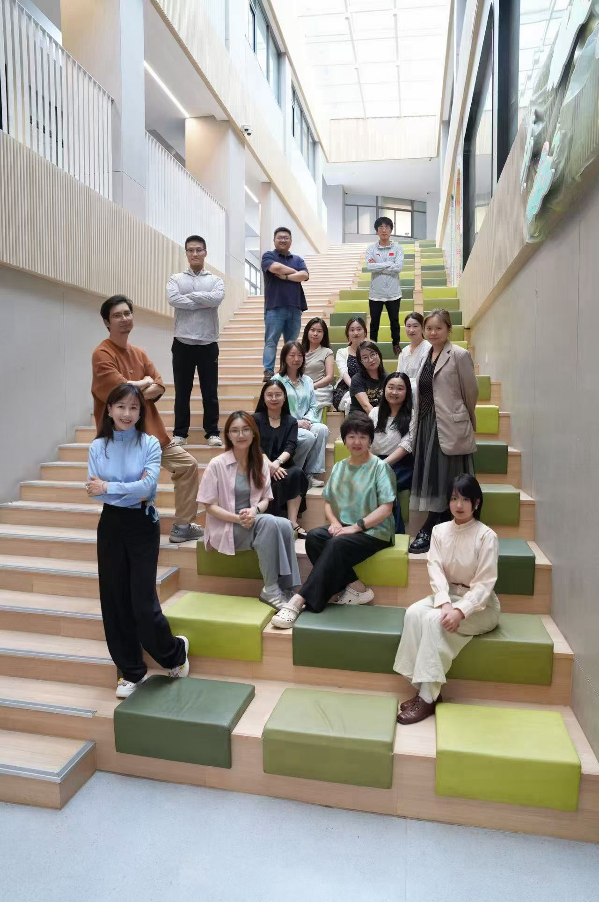
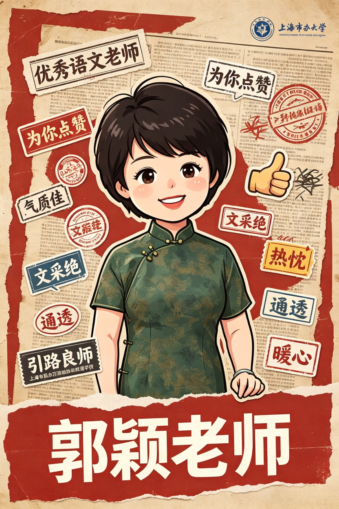
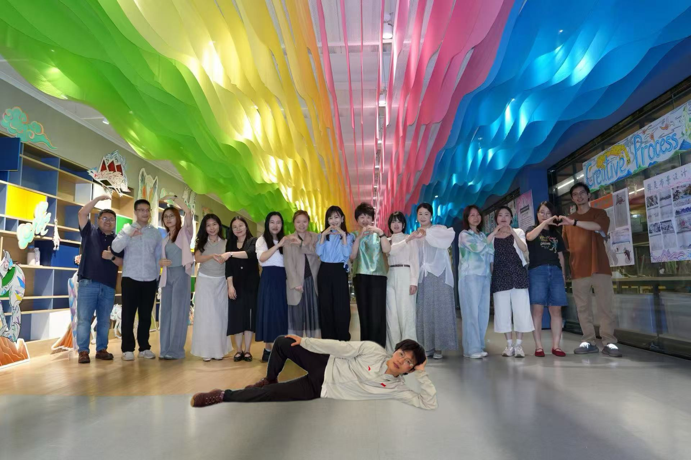

2025 学年年度总结
汇报人：赵宗莉
每一位老师，都是这部年度电影里的主角。
李颖 · 李晓璇 · 林斯瑶 · 郭颖
黎继奎 · 宋治圣 · 张娟 · 姜正富
马鸿 · 林诚彬 · 万敏珍 · 廖雨澄
田卓凡 · 凌俐雯 · 王业培 · 赵宗莉 · 周宵亮
把文字讲成风景，把课堂过成故事。
ACTION!别人备课循规蹈矩，她带着东南亚见闻花式设计课堂，貌美又满腹巧思，文采创意双在线。
温柔外壳下的中文系硬核学霸、复旦底蕴藏一身，说话温柔，讲作文一针见血。
典型江南小家碧玉模样，眉眼温婉灵气十足，身为语文老师才情满腹，提笔成文，谈吐皆风雅。

气质佳、文采绝，满腹文学底蕴才情满满，单论语文功底便遥遥领先。更难得心底热忱通透，但凡同事遇上难处，她总能搭把手、支个招，事事贴心周全。专业上是引路良师，生活里是温柔暖心大姐姐，各项长处拉满，属实不给旁人留半点赶超空间。
把逻辑讲清楚，也把团队撑起来。
ACTION!优势过剩：脸好、歌好、数学还好，让别人无路可走。
幽默只是标配，硬核才是底牌：数学教研统筹在行，AI 运用得心应手，身为数学备课组长兼全校靠谱技术救火顾问，大小技术问题找他准没错，东北开朗性格人缘格外吃香。
别嫌她要求苛刻，正是这份严谨较真，把班风学风抓得扎扎实实，任教经验老道，教学章法成熟。
身兼八年级年级组长与数学教师，待人温润谦和，行事却坚守本心、公正无私。心中始终装着初中部数学教学大局，甘于牺牲个人时间，默默无私奉献，全心为整个学部教学平稳推进保驾护航。
语言之外，是稳定、担当与热爱。
ACTION!长着一双灵动大眼睛，气质沉稳，处事不惊，英语口语发音堪称范本；干活任劳任怨，当组长事事统筹安排，靠谱又耐看。
腰可以受伤，英语课堂笑点不能断，腰托是他专属上课装备。
管得好全组老师，镇得住课堂学生，哄得好一儿一女，湖南干练姐姐全方位通关人生副本。
瓷都出产高颜值女孩，情绪稳到从不急躁，人缘拉满，班主任业务还一路开挂飞速进阶。
不同学科，同一部年度大片。
ACTION!自带阳光少年气质，外形亮眼朝气蓬勃，既是海归视野开阔，又是本校闭环校友典范，体育课被他上得元气十足。
带着海外前沿生物学眼界回到母校，既是协和往届学子，也是传道授业在岗教师，双重身份格外有梗。
沉静内敛是外在气质，博古通今是硬核实力，深耕历史课堂，娓娓拆解朝代更迭，满腹才情，尽显大家风范。
担任10个班级的道法老师+班主任，小弟数量马上赶上孙主任，号称"万源协和顶级牛马"，感谢领导厚爱。
全年级万能救火员，颜值拉满就算了，脑子转得比经纬网还快，别人遇事一筹莫展，她总能想出多重解决方案，带班、管年级样样拿捏，美貌才华双天花板。碰上难沟通家长、棘手学生，班主任一筹莫展之时，她总能冲锋陷阵最前沿，帮助大家排忧解难。就算半夜求助，也会细心帮忙改消息、支妙招，有她，万事不愁！
从秋天到夏天，一路奔跑、探索、表达、发光。
01足球挑战赛
04初中部运动会
07探险少年
16篮球挑战赛
05古诗词大会
06冬季音乐会
12英语戏剧之夜
13京剧院入校园
18登塔观山海
03秋季实践活动
08公益义卖善淘
10东方绿洲实训
11睡衣日
15广富林遗址
02数学集市
09电影博物馆
14七年级科技展
17上博东馆
19夏季音乐会
G7「杀青」了！一学年的奔跑与成长，都收藏在这部年度影片里。

感谢每一位老师
感谢每一个闪闪发光的少年
这一年，谢谢每一位认真发光的大人。
TO BE CONTINUED... 2025 学年 · 七年级组年度总结